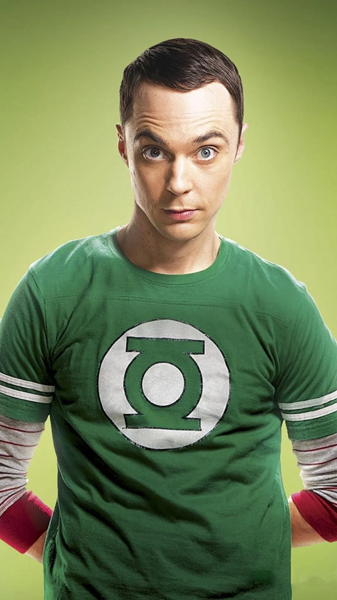
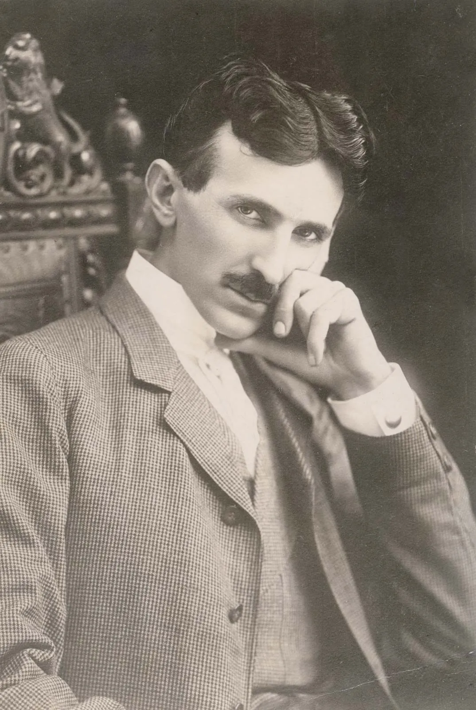

Personajes Frikis de la semana
Sheldon CooperCon un cociente intelectual de 187, el personaje de Sheldon Cooper interpretado por Jim Parsons en la serie The Big Bang Theory es sin duda el geek más conocido y apreciado por la mayoría. Cooper, que padece síndrome de Asperger, posee memoria eidética y un gran cerebro que dedica a la ciencia. Es físico teórico en el Instituto de Tecnología de California (Caltech) y estudia la materia oscura. La única actividad física que practica es el paintball. habla perfectamente Klingon. |
Elon Musk
El conocido empresario, CEO de Tesla y SpaceX entre otras, es muy activo en redes sociales, que aprovecha para sacar una sonrisa a sus seguidores bastante a menudo. Le hemos visto en más de una ocasión haciendo referencia a los Monty Python, a Mario Kart y otros videojuegos, a sus historias ciencia ficción favoritas... Un día memorable fue cuando recordó en su cuenta de twitter la Guía del Viajero Intergaláctico de Douglas Adams escribiendo '42k'. |
Nikola Tesla¿Tesla un geek? Si hubiera estado de moda este término en los tiempos de Nikola Tesla, habría encarnado perfectamente el estereotipo de geek. Era un geek en toda regla. Sus experimentos siguen siendo de lo más interesante a nivel visual. Por ejemplo, la Wardenclyffe Tower que construyó en 1901, fue uno de sus curiosos inventos. Se trataba de una enorme antena aérea en Nueva York que, según él, podría usarse como un "rayo de la muerte" |
El ganador al friki de la semana es para:

|
JEAN BRAND MARTINEZ,
|